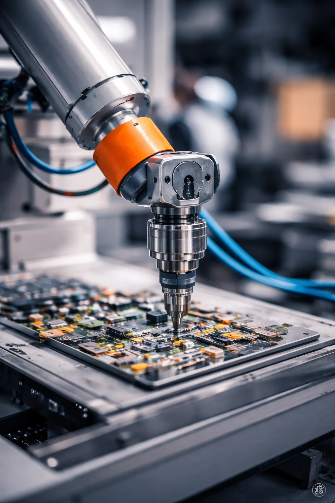
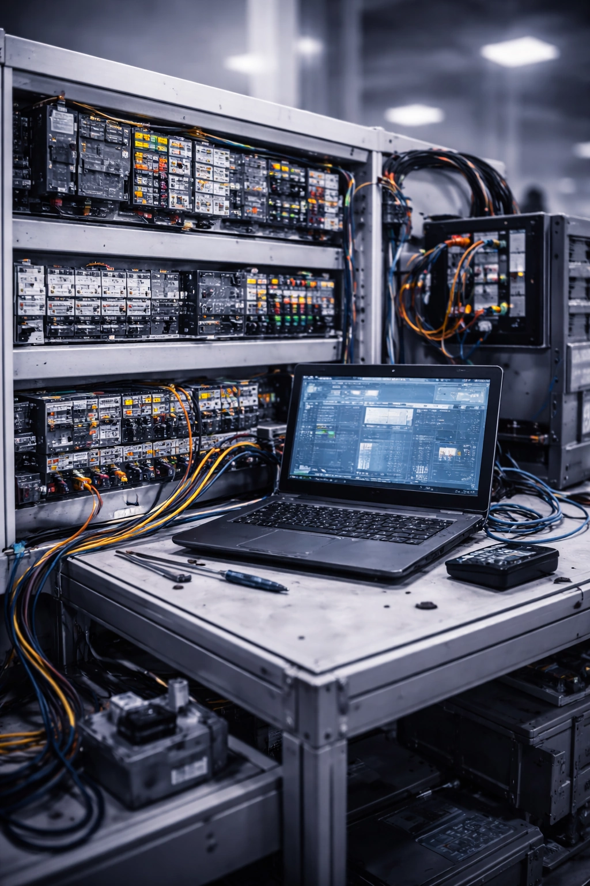
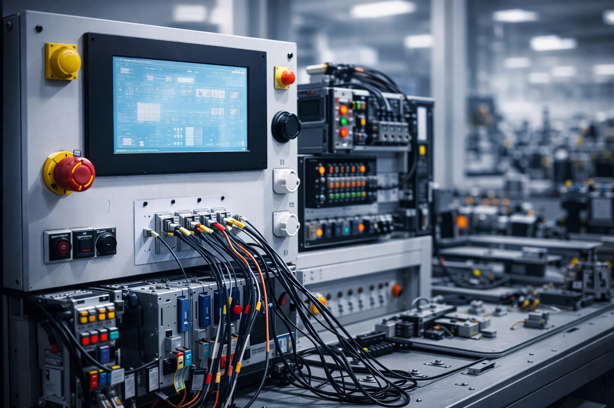
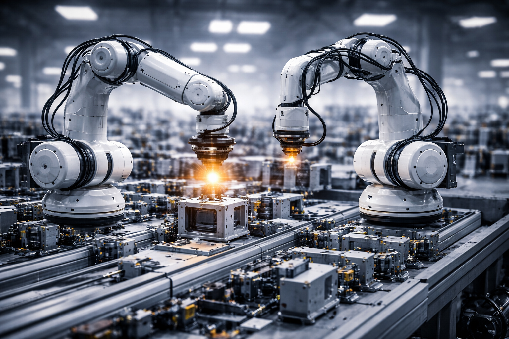
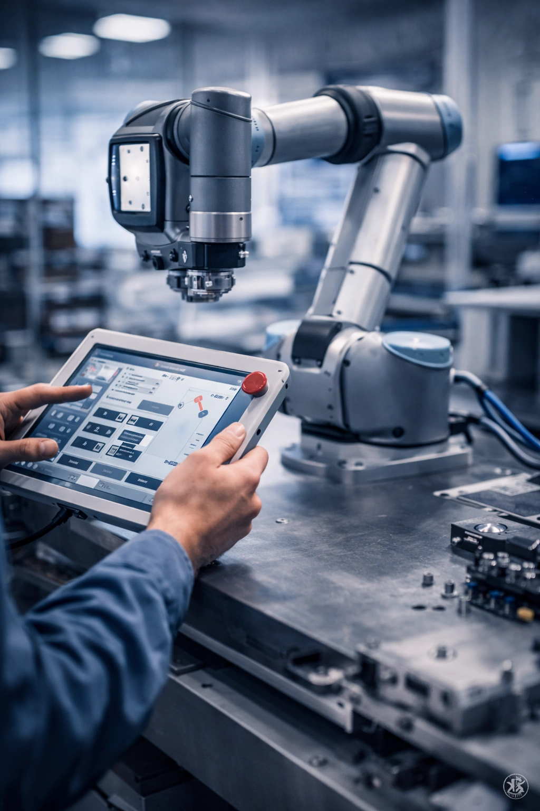
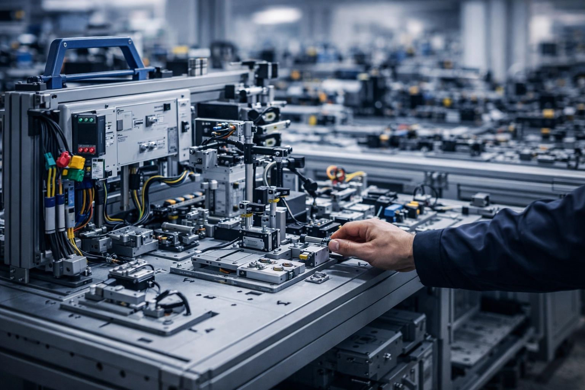

Какво е индустриална мехатроника?
Обичаш ли да разбираш как работят сложните машини и искаш да създаваш и поддържаш интелигентни технически системи? Специалност „Индустриална мехатроника“ в ПГМЕТТ „Христо Ботев“ съчетава механика, електроника, автоматика и роботика, за да те подготви за работа с модерно индустриално оборудване и интелигентни машини.
Ще се научиш да монтираш, диагностицираш, ремонтираш и поддържаш сложни мехатронни устройства, работейки в екип със специалисти от различни направления.
Какво ще учиш?
Ще придобиеш знания и умения в ключови области като:
- механика и машиностроене
- измервателна техника
- хидравлика и пневматика
- електротехника и електроника
- автоматизация и роботика
- работа със съвременни CAD системи за моделиране и чертане
Практически умения и работа с технологии
- използване на измервателни уреди и сензори
- диагностика и профилактика на мехатронно оборудване
- четене и интерпретиране на проекти, чертежи и схеми
- изчисляване и оразмеряване на елементи и съоръжения
- работа с актуатори и прецизни технически инструменти
- използване на техническа документация за реални задачи
Партньорствата на училището с фирми в региона ти осигуряват възможности за стаж и реална работа по време на обучението. Ще натрупаш ценен опит, който да те отличи на пазара на труда.
Професионална реализация
Завършилите „Индустриална мехатроника“ могат да работят в:
- монтаж, ремонт и поддръжка на мехатронни системи
- програмиране и управление на роботи и автоматизирани машини
- автоматизация на производствени процеси
- поддръжка на медицинска и лабораторна техника
- оптична и лазерна техника
За кого е тази специалност?
- Ако те вълнуват високотехнологичните машини и системи
- Ако обичаш да решаваш практически задачи и да работиш с техника
- Ако искаш сигурна професия с широко поле за развитие
- Ако търсиш работа в модерни индустриални сектори и роботика
Тази специалност комбинира най-доброто от механиката, електрониката и автоматизацията и ти дава ключови знания за работа с интелигентна техника в съвременната индустрия.
Галерия





